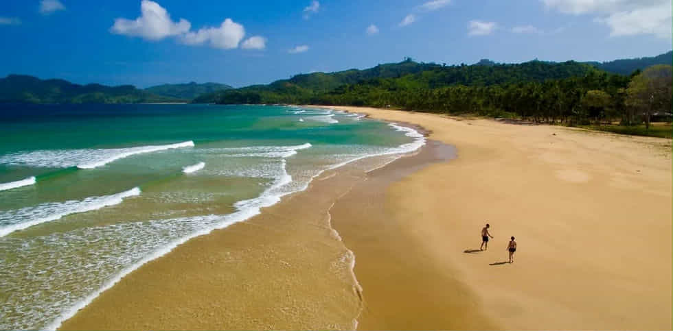

ABOUT DULI BEACH (EL NIDO)
Duli Beach is one of El Nido’s best-kept secrets a secluded stretch of pristine white sand, turquoise waters, and gently swaying palm trees that seems untouched by time. Unlike the more popular beaches in central El Nido, Duli remains quiet and intimate, making it ideal for travelers seeking an escape from the crowds. Its natural beauty offers more than just a scenic backdrop; it provides a true sense of relaxation and adventure. The beach is surrounded by lush greenery and rugged cliffs that create a dramatic coastline, perfect for photography, contemplation, or simply enjoying nature in its rawest form. Beyond its breathtaking scenery, Duli is also a hub for surfing enthusiasts, where beginners and intermediate surfers can ride gentle to moderate waves.